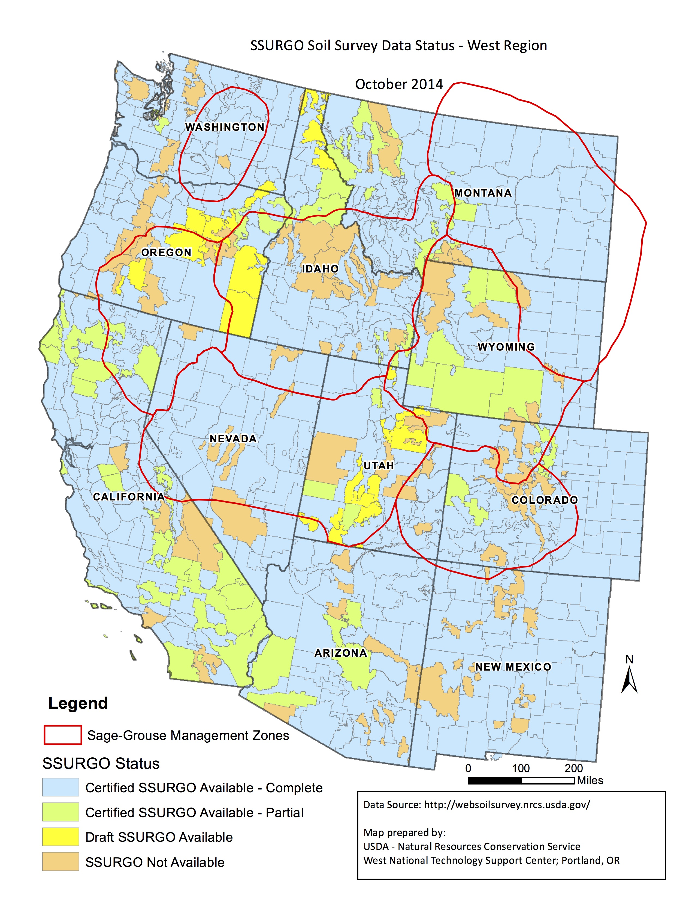

Priority Areas for Conservation (PAC) represent the most important areas needed for maintaining sage grouse representation, redundancy and resilience across the landscape.
This product provides a high-resolution estimate
of tree canopy cover on a per acre basis. Thematic raster data represents
tree canopy cover (% cover per acre) in the following classes:
1: less than 1% or absent
2: 1 - 4%
3: 4 - 10%
4: 10 - 20%
5: 20 - 50%
6: greater than 50%
Data are in 1m spatial resolution suitable for analysis in a GIS. The
canopy cover product is derived from 1 meter 4-band NAIP imagery from various
years (see below). A spatial wavelet analysis (SWA) algorithm was implemented
in MATLAB for conifer detection. It is intended to target conifer canopy
cover; however, the SWA method used detects non-conifer tree species in some
situations. Therefore, users should ground truth results when making
site-specific land management decisions. SWA is particularly good at detecting
conifer trees in arid environments, although has known limitations. The SWA
algorithm requires a minimum of 2-3 pixels in width for tree detection.
Therefore, the minimum tree detection size using 1m spatial resolution NAIP
imagery is 2-3m in diameter. Conifer tree detection accuracy decreases in
mesic environments such as wetlands, riparian areas and mountainous zones
where mixed deciduous and conifer tree diversity exists. This map provides an
estimate of conifer cover on a per-acre basis based on a census of all trees,
not exclusively encroaching trees.
County level data are in WGS84 geographic coordinate system (EPSG:4326), 1
meter resolution. Original analyses were performed in their respective UTM
zone, relative to the NAIP imagery. As counties may span multiple UTM zones,
data were projected to WGS84 and mosaicked at the county level. Reprojection
may be necessary for certain analyses.
State level data can be downloaded from the table below or the University
of Montana FTP server.
Falkowski et al. In Review. Mapping tree canopy cover in support of proactive
prairie grouse conservation in western North America.
This is more detailed content on Conifer Data Downloads.
Ecosystem Resilience & Resistance
This layer depicts a simplified index of relative ecosystem resilience to
disturbance and resistance to cheatgrass (“R&R”), providing a tool for rapid
risk assessment across sage-grouse habitats in the western range. Potential
ecosystem R&R depends in part on the biophysical conditions an area is
capable of supporting and soil temperature and moisture regimes can be used
to depict this gradient at large scales (Chambers et al. 2014). Soils data
were derived from two primary sources: 1) completed and interim soil surveys
available through the Soil Survey Geographic Database (SSURGO), and 2) the
State Soils Geographic Database (STATSGO2) to fill gaps where SSURGO data
were not available (Fig. 1). Using best available information and expert input, each
soil temperature and moisture regime/moisture subclass was placed into one
of three categories of relative R&R: high, moderate, and low (Table 1;
Maestas et al. 2016). Soils with high water tables, wetlands, or frequent
ponding that would not typically support sagebrush were not rated.
This tool is most appropriate for regional and landscape level planning and
prioritization. When combined with other data layers, such as the sage-grouse
PACs and existing land cover, planners can use this tool to inform where to
prioritize strategic actions before, during, and after wildfire to conserve
sagebrush habitats and prevent conversion to annual grasslands. At more local
scales, depicting the actual soil temperature/moisture subclasses included in
the file geodatabase, rather than just the index, provides a more nuanced view
of the environmental gradient. Application of this tool is just one step in the
planning process and must be followed by more detailed site assessments to
verify soils and incorporate additional factors, such as current vegetation
condition, that heavily influence R&R.
Thematic raster data represent resilience and resistance in the following
classes:
0: Wetland/Riparian
1: High
2: Moderate
3: Low
Null: Not Available
Figure 1. Soil survey data sources assembled in October 2014 to depict a
seamless index of relative ecosystem R&R. Abrupt transitions in soil
temperature and moisture regimes are often an artifact of adjoining soil
survey products, especially where more detailed SSURGO adjoins coarser
STATSGO2 data.

Table 1. Rating of relative resilience and resistance across predominant
rangeland ecosystems in the western sage-grouse range. From Maestas et al.
2016.
Soil temperature and moisture regime; moisture subclass
Common name
Typical shrub type
R&R rating
Cryic/Xeric-Typic
Cold/moist
Mountain big sagebrush, mountain brush
High
Cryic/Xeric bordering on Aridic
Cold/moist bordering on dry
Mountain big sagebrush
High
Frigid/Xeric-Typic
Cool/moist
Mountain big sagebrush, mountain brush
High
Cryic/Aridic bordering on Xeric
Cold/dry bordering on moist
Mountain big sagebrush, low sagebrush
High
Cryic/Aridic-Typic
Cold/dry
Low sagebrush
Moderate
Frigid/Xeric bordering on Aridic
Cool/moist bordering on dry
Mountain big sagebrush
Moderate
Frigid/Aridic-Typic
Cool/dry
Mountain/Wyoming big sagebrush, low sagebrush
Moderate
Frigid/Aridic bordering on Xeric
Cool/dry bordering on moist
Mountain/Wyoming big sagebrush, low sagebrush
Moderate
Mesic/Xeric-Typic
Warm/moist
Wyoming big sagebrush, basin big sagebrush
Moderate
Mesic/Xeric bordering on Aridic
Warm/moist bordering on dry
Wyoming big sagebrush, black sagebrush
Low
Mesic/Aridic bordering on Xeric
Warm/dry bordering on moist
Wyoming big sagebrush, basin big sagebrush
Low
Mesic/Aridic-Typic
Warm/dry
Salt desert shrub
Low
Maestas et al. 2016. Tapping Soil Survey Information for Rapid Assessment
of Sagebrush Ecosystem Resilience and Resistance. Rangelands.
Chambers et al. 2014. Using resistance and resilience concepts to reduce
impacts of annual grasses and altered fire regimes on the sagebrush
ecosystem and sage-grouse– A strategic multi-scale approach. Fort Collins,
CO, USA: U.S. Department of Agriculture, Forest Service, RMRS-GTR-326. http://www.fs.fed.us/rm/pubs/rmrs_gtr326.html